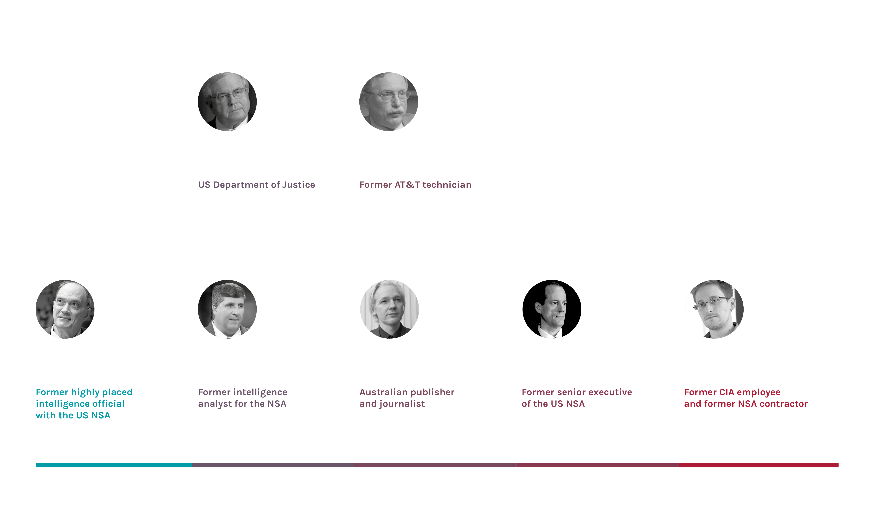
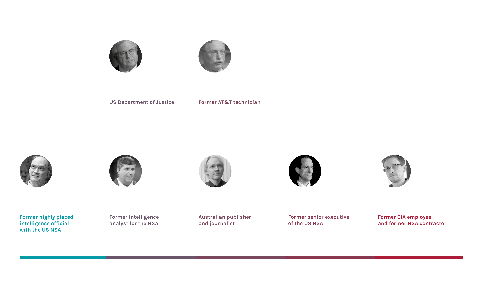

Mass surveillance is the surveillance of an entire or a substantial fraction of a population for collecting personal data; it is often carried out by governments or governmental organisations, but may also be carried out by corporations, either on behalf of governments or at their own initiative. Depending on each nation’s laws and judicial systems, the legality of and the permission required to engage in mass surveillance varies.
Mass surveillance has often been cited as necessary to fight terrorism, to prevent social unrest, to protect national security, to fight child pornography and protect children. Conversely, mass surveillance has equally as often been criticized for violating privacy rights, limiting civil and political rights and freedoms, and being illegal under some legal or constitutional systems. There is a fear that increasing mass surveillance will ultimately lead to a totalitarian state where political dissent is undermined by surveillance programs (as the distopyan world created by Orwell in "1984"). Such a state may also be referred to as a surveillance state or an electronic police state.
In 2013, the practice of mass surveillance by world governments was called into question after Edward Snowden‘s 2013 global surveillance disclosure. Reporting based on documents, Snowden leaked to various media outlets triggered a debate about civil liberties and the right to privacy in the digital age.
HISTORICAL OVERVIEW
The main whistleblowers

The main whistleblowers
